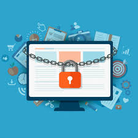

¿Qué es la Educación Cívica?
La educación cívica es una herramienta fundamental para formar ciudadanos conscientes, participativos y responsables. En Chile, esta materia busca promover el respeto por los derechos humanos, la democracia y las instituciones, fomentando una sociedad más informada y activa en temas de interés público. Enseñar educación cívica desde temprana edad contribuye a la construcción de una ciudadanía comprometida, que conoce sus deberes y ejerce sus derechos de forma activa y pacífica.
¿Qué es la Ciberseguridad?
La ciberseguridad es el conjunto de medidas, prácticas y herramientas tecnológicas diseñadas para proteger la información, los sistemas y las redes frente a ataques cibernéticos. En la actualidad, el uso de Internet y dispositivos digitales está presente en casi todos los aspectos de la vida diaria, lo que también incrementa la exposición a riesgos digitales como virus, robos de datos, fraudes, suplantación de identidad y ataques informáticos.
¿Por qué es importante la Ciberseguridad?
- Protege tu identidad y datos personales.
- Evita fraudes, estafas y robos de información.
- Es fundamental para empresas, instituciones y gobiernos.
Vivimos en una era digital donde los datos tienen un valor enorme. Desde información bancaria hasta registros médicos, todo puede ser almacenado y transferido digitalmente. La ciberseguridad no solo protege nuestra privacidad, sino que también garantiza la estabilidad de instituciones públicas, empresas, y hasta sistemas de gobierno.
Una brecha de seguridad puede tener consecuencias graves: desde el robo de identidad de una persona hasta el colapso de servicios públicos esenciales. Por eso, educar sobre ciberseguridad y promover hábitos digitales seguros debe ser una prioridad tanto en el hogar como en las instituciones educativas.

Consejos básicos para estar seguro en internet
- Usa contraseñas seguras y no las compartas.
- Evita hacer clic en enlaces sospechosos.
- Actualiza tu software regularmente.
- No descargues archivos de sitios poco confiables.
- Activa la verificación en dos pasos.

Visita el sitio oficial del gobierno chileno sobre Ciberseguridad